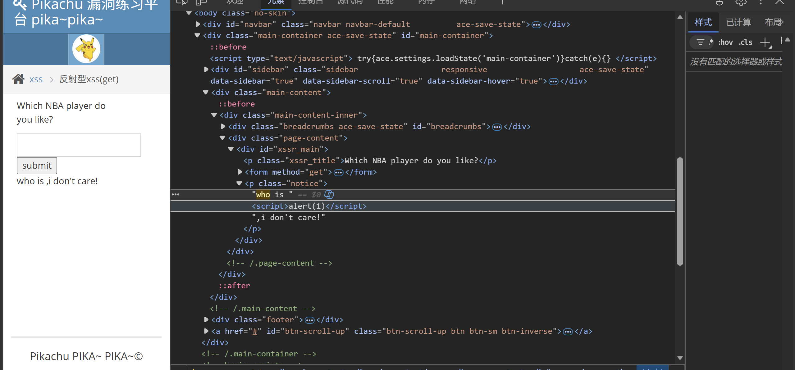

Pikachu - 反射型 XSS（GET）
分类：Web / XSS · 环境：本机 Pikachu 靶场 · 题目路径：Cross-Site Scripting → 反射型 xss(get)
仅在自己部署的 127.0.0.1 靶场练习；测试代码只弹出数字，不读取或发送任何数据。
一、正常回显
打开 /pikachu/vul/xss/xss_reflected_get.php，提交 kobe，页面显示对应文案及图片。再输入 test123，地址栏出现 message=test123&submit=submit，页面显示 who is test123,i don't care!。这证明输入通过 GET 参数传给服务器，再被放回页面。
二、源码与成因
服务端检测到 submit 参数后，将 message 直接拼入 HTML，没有做输出转义：
if (isset($_GET['submit'])) {
// 省略空值和 kobe 分支
$html .= "<p class='notice'>who is {$_GET['message']},i don't care!</p>";
}
// 页面中执行 echo $html;页面输入框虽然有 maxlength="20"，但它只限制在输入框内键入的字符数；直接编辑 GET 请求的 URL 不受这个 HTML 属性约束。
三、构造与验证
- 将地址中的
message=test123改为message=<script>alert(1)</script>，保留&submit=submit。 - 可复制的 URL 编码形式如下；其中
%3C和%3E分别表示<和>：
http://127.0.0.1/pikachu/vul/xss/xss_reflected_get.php?message=%3Cscript%3Ealert(1)%3C%2Fscript%3E&submit=submit本地 HTTP 请求返回 200，响应中包含 who is <script>alert(1)</script>。浏览器开发者工具的 Elements 面板也能看到脚本成为 p.notice 中的子元素；截图记录的是该 DOM 结果，不是弹窗截图。

若浏览器显示内容为 1 的弹窗，表示脚本已执行。HTTP 回显与 DOM 注入已核实；本文不把未单独留存的弹窗画面当作独立截图证据。
四、修复思路
在输出到 HTML 文本节点时进行上下文对应的编码，例如：
$message = htmlspecialchars($_GET['message'], ENT_QUOTES | ENT_SUBSTITUTE, 'UTF-8');
$html .= "<p class='notice'>who is {$message},i don't care!</p>";这样浏览器收到的是 <script> 等实体，只会显示输入文字，不会创建可执行的脚本元素。服务端输出编码才是这里的关键；maxlength 不能代替它。